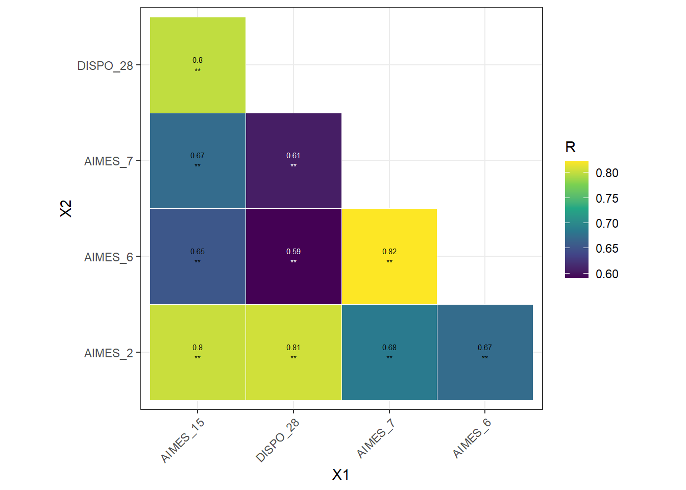

[add button to download pdf version of this doc]
There have been many iterations of a Connection to Nature (CTN) measure (see Ives et al., 2017, Restall & Conrad, 2015, and Tam 2013 for review). Several of these measures have proposed multi-dimensional structure (Davis, Le, and Coy 2011; Dong et al. 2020; Hatty et al. 2020; Kurth et al. 2020; Meis-Harris, Borg, and Jorgensen 2021; Olivos and Aragonés 2011), however there is little consistency across these dimensional structures. We build upon two recently published measures Meis-Harris, Borg, and Jorgensen (2021), which ground their dimensional structure in a thorough cross-disciplinary review of the nature connectedness literature. We extend their findings by addressing concerns that measures of CTN are vulnerable to self-report biases. In particular, concerns have been raised that people may be more likely to endorse CTN items out of social desirability or may simply not be able to express the abstract concept of connection to nature when asked directly (Gould and Schultz 2021). A possible solution to these issues is proposed by the Disposition to Connect with Nature measure which asks about people’s bonding behavior with nature instead of simply asking about preferences to being in nature (Brügger, Kaiser, and Roczen 2011). We adapted items from the Multi-dimensional CTN scale (Meis-Harris, Borg, and Jorgensen 2021) and the Disposition to Connect with Nature scale (Brügger, Kaiser, and Roczen 2011) as well as including several items that we felt addressed the concerns raised about self-report bias.
Across the three exploratory factor analyses, four factors consistently arose as both the best fitting model and aligning with our theoretical framework. We further tested these four factors in a confirmatory factor analysis with a fourth sample and found adequate fit. The dimensions include:
An extensive search of the literature was conducted to source all existing adult measures of CTN. Based on this search, we identified two measures that showed promise for further adaptation: The AIMES Multidimensional CTN Scale (Meis-Harris, Borg, and Jorgensen 2021) and the Disposition to Connect with Nature scale (Brügger, Kaiser, and Roczen 2011). Our search identified that a multi-dimensional structure should be maintained for the measure, however existing multi-dimensional measures showed conflicting dimensional structure. (Hatty et al. (2020) & Meis-Harris, Borg, and Jorgensen (2021) - the later having a more complex and theoretically driven dimensional structure which is why it was chosen to retain for adaptation). The Disposition to Connect with Nature scale addressed issues of self-report bias though given it was written for a European sample the items were not generalizable to other populations. The items from these two scales resulted in a total of 59 items (AIMES = 19 items; Dispositional CTN = 40 items). Items were reworded for generalizability and clarity. Any reference to “connection to nature” was removed to avoid concerns about participants not fully understanding this concept. Items were also removed if they were redundant. This left a total of 39 items adapted from existing measures (AIMES = 17 items; Dispositional CTN = 28). See Table 1 below for all items considered for inclusion in the DEEP Connection to Nature Scale.
We chose to build upon the strong theoretical basis for the dimensional structure of the AIMES with some changes. Meis-Harris, Borg, and Jorgensen (2021) based the dimension of the AIMES (Affection, Identity, Materialism, Experience, & Spirituality) off Ives et al. (2018) which lists five aspects of human-nature relationships that can lead to behavioral change. We agree with that three of these dimensions are part of the construct of CTN (these are also widely agreed to be part of the construct of CTN in the literature):
However, they included two value-based dimensions which, while strongly correlated to CTN, have been defined as separate constructs (Schwartz 1992, 1999; Schultz 2001; Stern and Dietz 1994):
We chose to remove the the material dimension entirely and adapt the philosophical dimension so it more accurately reflected the individual level of CTN. That is, it measured one’s own beliefs about how, as an individual, they are connected to nature. In line with this re-analysis of the construct of CTN we further adapted the existing 39 items and created an additional 14 items in order to capture the following dimensions of CTN:
Items were created to capture, behavioral, embodied, and experiential relationships with nature (in line with Brügger et al., 2011’s Disposition to CTN) in order to overcome concerns with self-report bias. This resulted in items that asked about conscious attendance to nature. There was also an effort to create items that updated previous philosophical items to more individual relationships with nature which tapped into a more spiritual relationship. This resulted in a total of 58 items.
Table 1. Items considered for inclusion in the DEEP Connection to Nature Scale
| Original Scale | Original Item | Reworded | Notes |
|---|---|---|---|
| AIMES | I feel uneasy if I am away from nature for too long | ||
| AIMES | I feel right at home when I am in nature | ||
| AIMES | I feel a sense of emotional connection to nature | ||
| AIMES | I think of myself as an ‘environmentalist’ | ||
| AIMES | I think of myself as someone who is very concerned about taking care of nature | ||
| AIMES | Protecting nature is an important part of who I am | ||
| AIMES | My relationship to nature is a big part of how I think about myself | ||
| AIMES | I like to get outdoors whenever I get the chance | ||
| AIMES | Being in nature allows me to do the things I like doing most | ||
| AIMES | My connection to nature is something I would describe as “spiritual” | ||
| AIMES | Human wellbeing depends upon living in harmony with nature | ||
| AIMES | Human beings and nature are connected by the same ‘energy’ or ‘life-force’ | ||
| Disposition to CTN | I mimic animal behaviour; for example, the way a vulture walks | When encountering an animal I mimic their facial expressions or behaviour | |
| Disposition to CTN | I get up early to watch the sunrise | When possible, I take time to watch the sunrise or the sunset without distractions | |
| Disposition to CTN | I cross meadows barefoot | When I am outside on grass, sand, or soil, I often take off my shoes to feel the ground on my feet | |
| Disposition to CTN | I talk to plants | ||
| Disposition to CTN | I help snails cross the street | I am careful to not step on snails | |
| Disposition to CTN | I watch TV shows that have animals as the main characters | I watch TV shows where the focus is on animals or plants | |
| Disposition to CTN | I take time to watch the clouds pass by | ||
| Disposition to CTN | I take time to consciously smell flowers | ||
| Disposition to CTN | I consciously watch or listen to birds | ||
| Disposition to CTN | I spend time in a park | I spend time in local parks | |
| Disposition to CTN | I deliberately take time to watch stars at night | ||
| Disposition to CTN | Even when it is very cold or rainy I go out for a walk | ||
| Disposition to CTN | I hike or run in nearby nature reserves or forests | I hike or run in nearby nature | |
| Disposition to CTN | I talk to animals | I often talk to the wild animals I encounter (e.g., birds, lizards, rabbits, squirrels) | |
| Disposition to CTN | Indoor plants are part of the family | ||
| Disposition to CTN | Carving a tree feels like cutting myself | Thinking of someone carving a tree makes me feel physical pain | |
| Disposition to CTN | If one of my plants dies, I reproach myself | If one of my plants died, I would blame myself | |
| Disposition to CTN | If there is an insect, such as a fly, in my home, I try to catch and release it rather than kill it | ||
| Disposition to CTN | I prefer living in a city | ||
| Disposition to CTN | My favorite place is in nature | ||
| Disposition to CTN | Walking through a forest makes me forget about my daily worries | ||
| Disposition to CTN | The noise of crickets gets on my nerves | ||
| Disposition to CTN | I prefer outdoor to indoor sports | ||
| Disposition to CTN | Listening to the sounds of nature makes me relax | ||
| Disposition to CTN | Pets are part of the family | ||
| Disposition to CTN | a cleared forest makes me miserable | Seeing a cleared forest is upsetting to me | |
| Disposition to CTN | It makes me miserable to see a hedgehog that was hit by a car | It makes me upset to see an animal that was hit by a car | |
| New Item | I would enjoy growing and eating produce from my vegetable garden | ||
| New Item | I feel the need to touch plants when I encounter them | ||
| New Item | I pay attention to the changing seasons and how this affects nature where I live | ||
| New Item | I often think about the fact that all life is grounded on this planet that is relvolving around the sun | ||
| New Item | I am aware of the feelings of nature around me - the sun on my skin, the breeze on my face, or the ground under my feet | ||
| New Item | When I eat, I feel thankful for the animals, plants, and earth for nourishing me | ||
| New Item | I pay attention to the current phase of the moon | ||
| New Item | I like the idea that, when I die, my body will return to the earth, nourishing the soil | ||
| New Item | I regularly engage in a ritual practice that involves nature (e.g., full moon or solstice rituals) | ||
| New Item | I think about the “shared breath” between myself and plants; I breathe in the oxygen released by plants, and plants use the carbon dioxide I exhale. | ||
| New Item | I view nature as a mother who nurtures and cares for me | ||
| New Item | Every part of nature is sacred | ||
| AIMES | Feeling connected to nature helps me deal with everyday stress | Removed due to similarity to another item (Walking through a forest makes me forget about my daily worries). This item also includes the abstract concept “connection to nature” | |
| AIMES | Forests are valuable mostly because they produce wood products, jobs and incomes for people | Removed as this construct is better described as a worldview than as connection to nature | |
| AIMES | Meeting the needs of people requires sacrificing some natural areas | In order to meet the needs of people, some natural areas must be sacrificed | Initially reworded for clarity then removed as this construct is better described as a worldview than as connection to nature |
| AIMES | In order to provide us with the goods and services we need we can’t avoid nature being degraded | Removed as this construct is better described as a worldview than as connection to nature | |
| AIMES | I enjoy spending time in nature | Removed due to simliarity to another item (my favorite place is in nature). Kept the other item as it was less direct | |
| AIMES | Getting away on an overnight trip in nature is something I do as often as I can | Getting away on an overnight trip in nature is something I would like to do as often as I can | Removed due to similarity to another item (I like to get outdoors whenever I get the chance) and there has been debate about the phrasing of this item, many people find it confusing |
| AIMES | Everything in nature is connected (e.g., animals, plants, humans, water, air, land, fire, etc) | Decision to keep reference to nature in this item because it is not being used as a definition | |
| Disposition to CTN | I collect mushrooms or berries | I would enjoy hunting, fishing, or foraging for plants | Initially changed wording to be more generalizable. Decided to remove altogether because of difficulty with nuance around this concept across cultures |
| Disposition to CTN | I mimic the sounds of animals | When I hear an animal making vocal noises I find myself responding to them with similar sounds | Removed because it is not very generalizable |
| Disposition to CTN | I feel the need to be out in nature | Removed due to similarity to another item (I feel uneasy if I am away from nature for too long) | |
| Disposition to CTN | I have a CD or tape with recorded sounds of nature | I regularly listen to recordings of nature sounds (e.g. insects, whales, running water, birdsong etc.) | Removed due to similarity to another item (listening to nature helps me relax) |
| Disposition to CTN | I collect objects from nature such as stones, butterflies, or insects | Removed because of multiple potential interpretations | |
| Disposition to CTN | I would always prefer spending time alone in nature than with my friends. | Removed as the item too extreme (potential for floor effects) | |
| Disposition to CTN | I prefer forest hikes to city strolls | Removed due to similarity to another item (I hike or run in nearby nature). Kept the other item as it measures actual behaviour while this one may be subject to social desirability bias | |
| Disposition to CTN | The croaking of frogs is comforting | Removed due to similarity to another item (Listening to the sounds of nature makes me relax). Item also does not generalize to all populations | |
| Disposition to CTN | I enjoy gardening | Removed. We created a new item that captured a deeper connection with respect to gardening | |
| Disposition to CTN | As a child I spent time in the woods | Removed because it isn’t adding anything new to the measure | |
| Disposition to CTN | I mourn the loss of pets | I have mourned (or could imagine mourning) the loss of a pet | Changed wording to allow people who have not actually gone through this experience to refelct on the concept |
| Disposition to CTN | Watching animals is exciting | Removed because it is unclear |
Two general population Prolific samples and one student sample were collected from November 2022 until April 2023 (See Table 2 for details of these samples)Three exploratory factor analyses were conducted on these samples.
Table 2. Sample details across three exploratory factor analyses
Variable | Sample 1 | Sample 2 | Sample 3 | |
|---|---|---|---|---|
N | 575 | 578 | 485 | |
Age | 29.61(6.11) | 20.37(2.38) | 40.56(13.5) | |
Gender | Male | 283 | 257 | 113 |
Female | 256 | 294 | 360 | |
Trans Man | 6 | 7 | 0 | |
Trans Woman | 1 | 2 | 1 | |
Non-binary | 24 | 11 | 11 | |
No response | 5 | 6 | 0 | |
Race | White | 360 | 441 | 89 |
Black | 40 | 41 | 9 | |
Asian | 68 | 31 | 187 | |
Latinx* | NA | NA | 130 | |
Mixed race | 54 | 30 | 46 | |
Other | 38 | 18 | 21 | |
No response | 15 | 16 | 3 | |
*Prolific does not capture this racial identity | ||||
Several items were removed in sample 1 before the EFA was conducted. These items were also excluded from samples 2 and 3.
Five items were removed due to high collinearity
A test for overdetermination revealed that the model may be overdetermined due to high colinearity between items (det <.00001). Inspection of the correlations revealed five items with highly colinearity (see Figure 1).
#arrange in order of predicted dimensions
col_order <- c("AIMES_4", "AIMES_1", "AIMES_2", "DISPO_29", "DISPO_21", "DISPO_22", "DISPO_34",
"DISPO_32", "DISPO_37", "DISPO_38", "DISPO_39", "DISPO_16", "DISPO_36",
"AIMES_8", "AIMES_6", "AIMES_5", "AIMES_7",
"AIMES_9", "AIMES_10", "AIMES_11",
"AIMES_15", "AIMES_14", "DISPO_28", "DISPO_8", "DISPO_13", "DISPO_18", "DISPO_26","DISPO_33", "DISPO_19", "NEW_4", "DISPO_1", "DISPO_5", "DISPO_6", "DISPO_20", "NEW_5", "DISPO_7", "DISPO_23",
"DISPO_2", "DISPO_10", "DISPO_11", "DISPO_12", "DISPO_15", "NEW_6", "NEW_7", "NEW_8", "NEW_11", "NEW_12",
"AIMES_17", "NEW_1", "NEW_9", "NEW_10", "NEW_2", "SPIRIT_10", "SPIRIT_12", "AIMES_18", "AIMES_19", "AIMES_20", "NEW_3")
factor_order_prolific <-
efa_1[, col_order]
factor_order_prolific <-
factor_order_prolific %>%
select(-AIMES_18,
-AIMES_19,
-AIMES_9,
-AIMES_10,
-AIMES_11)
#correlation
big_corr_prolific <-
factor_order_prolific %>%
as.matrix() %>%
rcorr()
#correlations over 0.8
correlation_table <-
round(big_corr_prolific$r, 2) %>%
as.data.frame() %>%
rownames_to_column %>%
gather(colname, value, -rowname) %>%
filter(abs(value) >= 0.8 & abs(value) < 1)
#table of the correlation over .8
high_cor_items <-
correlation_table %>%
pull(rowname) %>%
unique()
high_cor_items <-
factor_order_prolific %>%
select(all_of(high_cor_items)) %>%
as.matrix() %>%
rcorr()
#correlation plot
nm = rownames(high_cor_items$r)
m = t(combn(nm, 2))
d = cbind(data.frame(m), R = high_cor_items$r[m], P = high_cor_items$P[m])
d$label = round(d$R, 2)
d$label[d$P < 0.001] = paste0(d$label[d$P < 0.001], "\n**")
d$X1 = factor(d$X1, nm)
d$X2 = factor(d$X2, rev(nm))
graphics.off()
validation_plot <-
ggplot(d, aes(X1, X2, fill = R, label = label)) +
geom_tile(color = "white") +
scale_fill_viridis_c() +
geom_text(color = ifelse(d$R > 0.65, "black", "white"), size = 2) +
theme_bw() +
coord_equal() +
theme(axis.text.x = element_text(angle = 45, hjust = 1))
** Figure 1. Correlations of items > .80 ** 
The decision was made to remove AIMES_15, AIMES_7, and AIMES_2. However, removing these items did not improve the risk of overdetermination (det <.00001).
Further assumptions were explored to see if other items should be removed. A Bartlett’s test of sphericity found there was adequate shared variance between items (𝜲2 = 17044.9(1225), p <.001). A Kaiser-Meyer-Olkin test of factor adequacy found that, overall, there was adequate variance within items (MSA = 0.97). However, exploration of individual items identified three items which may not have sufficient variance: DISPO_32, DISPO_38, & DISPO_36 (MSA = 0.89, MSA = 0.82, & MSA = 0.84 respectively). Inspection for ceiling and floor effects confirms this, as well as identifying several other items that may have limited variance (See Figure 1). Several items also appeared to have high positive or negative skew (See Figure 2). Several items were removed due to high skewedness (NEW_9, DISPO_38, DISPO_39, DISPO_6, & DISPO_36). A final check of overdetermination revealed there is still the potential for the fit to be overdetermined (det <.00001).
Sample 2
A test for overdetermination revealed that the model may be overdetermined due to high colinearity between items (det <.00001). Inspection of the correlations no items with highly colinearity.
Further assumptions were explored to see if other items should be removed. A Bartlett’s test of sphericity found there was adequate shared variance between items (𝜲2 = 8385.44(703), p <.001). A Kaiser-Meyer-Olkin test of factor adequacy found that, overall, there was adequate variance within items (MSA = 0.95). Exploration of individual items showed that no single item was < .80. Inspection of box plots and histograms of distribution showed not items with ceiling/floor effects or high skewedness.
Sample 3
A test for overdetermination revealed that the model may be overdetermined due to high colinearity between items (det <.00001). Inspection of the correlations no items with highly colinearity.
Further assumptions were explored to see if other items should be removed.
A Bartlett’s test of sphericity found there was adequate shared variance between items (𝜲2 = 8353.44(73), p <.001).
A Kaiser-Meyer-Olkin test of factor adequacy found that, overall, there was adequate variance within items (MSA = 0.95).
Exploration of individual items showed that no single item was < .80.
Inspection of box plots and histograms of distribution showed not items with ceiling/floor effects or high skewedness.
Despite the potential for overdetermination, an EFA was conducted using a principal analysis method of extraction. This method has been found to be robust with models with non-normal data (Briggs & MacCullum, 2003). The Psych package in R was used with a promax rotation and principal analysis factoring method.
The number of factors to be extracted was estimated using both a scree plot and parallel analysis. The screen plot suggested ~3-4 factors, while parallel analysis suggested 6 factors across all three samples
[insert plots here from all three samples]
Four models were run across all three samples: * Six factors * Five factors * Four factors * Simplified four factors (removing dual loading and poor loading items from four factor model)
[Link to pdf for these tables - all three samples]
The simplified 4-factor model may be still be overdetermined: determinant < 0.00001, even though we have removed items with high covariance.
Tests of shared variance between items and variance within items both suggest the data is suitable for factor analysis. Sample 1 - Bartlett’s test of sphericity showed a 𝜲2 = 3171.39(595), p <.001). A Kaiser-Meyer-Olkin test of factor adequacy found that, overall, there was adequate variance within items (MSA = 0.97). Sample 2 - Bartlett’s test of sphericity showed a 𝜲2 = 6674.74(406), p <.001). A Kaiser-Meyer-Olkin test of factor adequacy found that, overall, there was adequate variance within items (MSA = 0.95). Sample 3 - Bartlett’s test of sphericity showed a 𝜲2 = 6674.74(406), p <.001). A Kaiser-Meyer-Olkin test of factor adequacy found that, overall, there was adequate variance within items (MSA = 0.95).
We calculated several fit indices and found that the simplified four-factor model was an appropriate fit across all three samples. While the full four-factor model, shows better fit according to these indices. We chose to keep the simplified factor due to the full four factor model including items that cross loaded.
The root mean square error of the approximate (RMSEA) should aim for > 0.05. The root mean square of the residuals (RMSR) should be close to 0. The Tucker-Lewis Index (TLI) aims for scores > 0.9. The Baysean Information Criteria (BIC) should be smaller and more negative.
[insert table off all sample fit indices]
Based on these results we selected xx items to test in a confirmatory factor analysis.
[go into more details based on EFA Overview document]
[insert table of items tested in CFA here]
394 undergraduate students participated for course credit in May 2023. Thirty-one participants did not complete the study and twenty-two people failed to pass attention checks so their data was not analysed. The final analysis consisted of 341 participants with ages ranging from 18 - 42 (M = 20.88, SD = 2.7). The same was primarily made up of females (68.3%) and people of Asian ethnicity (42.1%). See the table below for full descriptive statistics. Political Ideology was scored on a 7-point Likert scale with 1 = Most Conservative and 7 = Most Liberal. The mean political ideology was 5.04(1.17), showing that this sample skewed more liberal. This is to be expected with our student sample.
Two pre-existing CTN scales were used to identify convergent validity. The Connectedenss to Nature Scale (CNS, Mayer & Frantz, 2004) and the Environmental Identity Scale revised (EID-R, Clayton et al., 2021). The CNS is a 14-item scale designed to measure the cognitive beliefs about how interneconnect one’s self is to nature. It is measured on a Likert scale ranging from 1(strongly disagree) to 5(strongly agree). The EID-R is a 14-item scale designed to measure how interneconnect one’s self is to nature. It is measured on a Likert scale ranging from 1(not at all true of me) to 7(completely true of me).
Participants completed the Recurring Pro-environmental Behavior scale (Brick et al., 2017) which asks people to report how often they engage in various pro-environmental behaviors. This scale includes 20 items measured on a Likert scale ranging from 1(never) to 5(always).
Three subscales of the primals beliefs inventory (Clifton et al., 2019) were used to identify worldviews held by participants. The About Me subscale consists of five questions asking how egocentric ones beliefs are (e.g., Whatever is happening around me often feels related to me or something I’ve done). The Hierarchical subscale consists of five questions exploring beliefs about the hierarchical nature of the world (e.g., Things are rarely equal. Most plants and animals, even people, are better or worse than one another.). The Interconnected subscale consists of four items asking how connected or atomistic one believes the world to be (e.g., Most things are basically unconnected and independent from each other [reversed]). All items are measured on a Likert scale ranging from 1(strongly disagree) to 6(strongly agree).
Participants completed a brief version of the Locus of Control Scale (Sapp & Harrod, 1993) which includes 9 items revealing how much people perceived they have internal control over events (e.g., To a great extent, my life is controlled by accidental happenings). Measured on a Likert scale from 1(strongly disagree) to 7(strongly agree).
They also answered several demographics questions (age, gender, political ideology, and social economic status).
Several assumptions need to be met before running a confirmatory factor analysis. We identified that no item had a high inter-correlation > .75. Next, we checked the skewedness and kurtosis of each item to be included in the CFA. The closer to zero for both skewedness and kurtosis, the closer to a normal distribution. Any items whose distributions exhibited skewness and/or kurtosis that exceed general guidelines were considered non-normal removed from the analysis (Hair et al., 2017, p. 61).
For skewedness, using the skewness function from the Moments package in R (Komsta & Novemstky, 2015), skewness was calculated for each item. Any item where the number is greater than +1 (right skewed) or lower than -1 (left skewed), this is an indication of a substantially skewed distribution. No items were heavily skewed in this dataset.
For Kurtosis, using the kurtosis function from the Moments package in R (Komsta & Novemstky, 2015), kurtosis was calculated for each item. Any item were the number is greater than +3, the distribution is too peaked. Likewise, a kurtosis of less than -3 indicates a distribution that is too flat. Two items showed high kurtosis: “I have great respect for being alive on this earth and part of the universe” and “Listening to the sounds of nature makes me relax” and were removed from the CFA.
[insert kurtosis figure]
A Mardia Test of multivariate normality from the MVN package in R (Korkmaz et al., 2021) indicated that this data is not normal, suggesting that a rotation-method that is robust to non-normal data should be used (Mardia Skewedness = 7681.36, p < .001 and Mardia Kurtosis = 28.32, p < .001).
Testing a structure which includes an overall Connection to Nature factor and four dimensions:
Items load onto their dimensions well, with the exception of 1 item (“Thinking of someone carving their initials into a tree makes me cringe”) which loaded onto the Emotion dimension at 0.33.
All dimensions loaded onto the single CTN dimension, but these loaded quite highly (especially Deep and Emotion) which suggests these might be driving the overall CTN score.
[insert cfa figure]
Testing a structure which only includes the four dimensions:
Items load onto their dimensions similarly well to the hierarchical model. Again, 1 item loads weakly: (“Thinking of someone carving their initials into a tree makes me cringe”) which loaded onto the Emotion dimension at 0.33.
Dimensions are intercorrelated reasonable well - not too high as to have multi-collinearity (none above .80)
[insert cfa figure]
Testing a structure which includes only a single overall Connection to Nature factor
Loadings are slightly weaker onto a single overall CTN factor. Again, 1 item loads weakly: (“Thinking of someone carving their initials into a tree makes me cringe”) which loaded onto the Emotion dimension at 0.31.
[insert cfa figure]
Both four-factor models (flat and hierarchical) perform better than the single-factor model. There is no difference between the hierarchical and the flat models.
[inset fit incides table]
[insert final item table]
Two pre-existing CTN scales were used to identify convergent validity. The Connectedenss to Nature Scale (CNS, Mayer & Frantz, 2004) and the Environmental Identity Scale revised (EID-R, Clayton et al., 2021). The CNS is a 14-item scale designed to measure the cognitive beliefs about how interneconnect one’s self is to nature. It is measured on a Likert scale ranging from 1(strongly disagree) to 5(strongly agree). The EID-R is a 14-item scale designed to measure how interneconnect one’s self is to nature. It is measured on a Likert scale ranging from 1(not at all true of me) to 7(completely true of me).
We assessed the convergent validity of the new DEEP CTN scale, that is how closely our new measure is related to other established measures of the same construct. We tested this by looking at the zero order correlation between our new measure and its subscales and two established measures: The Connectedness to Nature Scale (CNS - Mayer & Franz, 2004) and the Environmental Identity Scale revised (EID-R - Clayton et al., 2021). A zero-order correlation found moderate-strong correlation between existing CTN scales and the new subscales of the DEEP CTN scale. See table below:
[insert table]
Two measures of predictive validity were used: Pro-environmental behavior & three subscales of the primal beliefs invetory - the world is interconnected, the world is heirarchical, and the world is about me.
Participants completed the Recurring Pro-environmental Behavior scale (Brick et al., 2017) which asks people to report how often they engage in various pro-environmental behaviors. This scale includes 20 items measured on a Likert scale ranging from 1(never) to 5(always).
Three subscales of the primals beliefs inventory (Clifton et al., 2019) were used to identify worldviews held by participants. The About Me subscale consists of five questions asking how egocentric ones beliefs are (e.g., Whatever is happening around me often feels related to me or something I’ve done). The Hierarchical subscale consists of five questions exploring beliefs about the hierarchical nature of the world (e.g., Things are rarely equal. Most plants and animals, even people, are better or worse than one another.). The Interconnected subscale consists of four items asking how connected or atomistic one believes the world to be (e.g., Most things are basically unconnected and independent from each other [reversed]). All items are measured on a Likert scale ranging from 1(strongly disagree) to 6(strongly agree).
We assessed the predictive validity of the new DEEP CTN scale (i.e., how well our measure can predict participant scores on two theoretically related constructs). The “gold standard” for predictive validity of CTN measures is how well it predicts pro-environmental behavior (PEB) (Clayton, 2003; Clayton et al., 2021; Mayer & Frantz, 2004; Tam, 2013). A zero-order correlation found moderate correlations between PEB and the new subscales of the DEEP CTN scale. See table below:
[insert table]
A linear regression with only the subscales of CTN predicting PEB showed that Deep, Emotional, and Presence were adequate to predcict PEB, but not Experiential.
[insert table & effect sizes]
We also suspected that DEEP CTN and its subscales would predict three types of primal world beliefs (Clifton et al., 2019): That the world is interconnected, that the world is not hierarchical, and that the world is not about me (i.e., less egocentric worldviews). A zero-order correlation found weak -moderate correlations between interconnected beliefs and the new subscales of the DEEP CTN scale. We also found weak correlations between egocentric beliefs and the Deep, Presence, and Overall CTN. No relationship was found between any subscale and hierarchical worldviews. See table below:
[insert table]
We explored if the DEEP CTN scale and its facets would perform above and beyond existing CTN scales (i.e., CNS and EID-R) when predicting PEB. A linear regression model was run, which included the dimensions of the DEEP CTN scale and the existing CTN measures (CNS and EIDR) were entered simultaneously to predict PEB. Note that because overall CTN was highly intercorrelated with Deep and Emotional, it was left out and only the four dimensions were included.
We found that the Emotional and Presence subscales remained significant predictors when existing measures of CTN were entered into the model. The Deep subscale was no longer a significant predictor. Both our subscales were of equal predictive value compared to the existing measures.
[insert table & effects figure]
Participants completed a brief version of the Locus of Control Scale (Sapp & Harrod, 1993) which includes 9 items revealing how much people perceived they have internal control over events (e.g., To a great extent, my life is controlled by accidental happenings). Measured on a Likert scale from 1(strongly disagree) to 7(strongly agree). Participants also answered several demographics questions (age, gender, political ideology, and social economic status).
We also tested the robustness of our new DEEP CTN scale, by testing if the DEEP CTN scale and its facets are significant predictors of PEB after controlling for known covariates of these outcomes: political ideology, gender, and socio-economic status (SES). We fist inspected a zero order correlation to identify which covariates should be included. Including any variable that: strongly correlated with PEB AND weakly correlated with the Deep CTN Scale may reduce variance in the dependent variable and therefore enhance the likelihood of seeing significant effects of the DEEP CTN scale. Further, if an additional variable is… strongly correlated with BOTH PEB AND the Deep CTN Scale, its inclusion in the model will address potential mediating effects regarding the relationship between the Deep CTN Scale and a DV of interest. In either case this would suggest it’s important to include as a covariate.
This resulted in including the following covariates: Politics (r = .19** with PEB & r = .18** to .23** with DEEP CTN dimensions) Primal Beliefs - The world is interconnect (r = .21** with PEB & r = .22** to .38** with DEEP CTN dimensions)
[insert correlation matrix]
A multiple linear regression model where dimensions of the DEEP CTN scale and existing CTN measures (CNS and EIDR) and the covariates (politics & primal belief interconnectedness) were entered simultaneously to predict PEB is reported in the table below.
By adding the covariates, both Emotional and Prescence subscales remained significant predictors of PEB. Adding covariates to the model did not improve the fit of the model above the variables in the incremental validity model (F(2) = 1.731, p = 0.179).
[insert table & effects figure]
[write up a summary of the findings here]